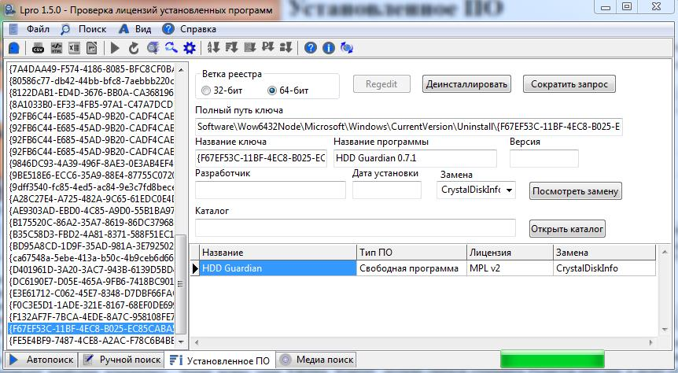

Установленное ПО
Инструмент для просмотра информации об установленном программном
обеспечении на компьютере на основании данных из реестра Windows.
Для открытия данного инструмента необходимо перейти во вкладку "Установленное ПО" со значком .

Некоторые поля могут быть не заполнены. Связано это с тем, что не
заполнены соответствующие ключи в реестре. Также, на 64-битных ОС могут
наблюдаться проблемы с заполнением полей 32-битной ветки реестра. Это
связано с использованием 32-разрядной версии приложения на 64-разрядной
версии ОС.
Кнопка "Regedit" должна сначала открывать Редактор реестра, а далее
открыть выбранный ключ реестра. Однако, на 64-битных ОС могут
наблюдаться проблемы с открытием ключей реестра. В версии 1.4.5 временно отключена, так как начат переход к встроенному средству просмотра ключей реестра.
Кнопка "Деинсталлировать" запускает указанный в реестре мастер удаление программы.
Кнопка "Открыть каталог" запускает Windows Explorer с передачей ей в
качестве параметра указанного в реестре каталога с программой.
Кнопка "Сократить запрос" нужна для сокращения поискового запроса в SQL базу данных.